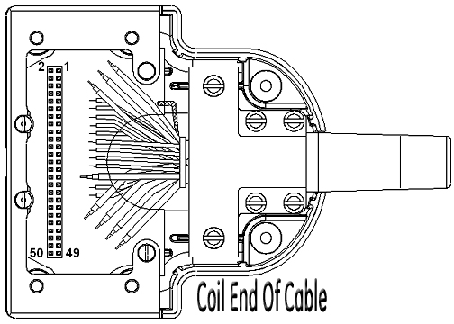

- 00000018WIA30ED0F20GYZ
- id_131068913.0
- Aug 29, 2019 5:54:07 AM
1.5T 8 Channel Wrist Array Troubleshooting Tips
Personnel Requirements
| Required Persons | Procedure |
| 1 | 30 min |
Overview
The following tips can be used to troubleshoot common problems with the 1.5T HD 8 Channel Wrist Array by Invivo, Catalog Number M3335LJ.
Preliminary Requirements
Tools and Test Equipment
Digital Multimeter
Required Conditions
Procedure
Receiving No Signal
Problem:
You are unable to pre-scan or are scanning and yet receiving no signal.
Possible Solution:
-
Verify that the port which is used to plug in the coil either has a green light illuminated (Port A or Port B) or a green lock (Port P1, P2, P3 or P4) indicated. This indicates the coil is properly plugged into the system.
-
Verify that the system has correctly detected the coil by checking Currently Connected in the GUI to select coils in Rx as shown in Example of the Coils Connected Box.
Figure 1. Example of the Coils Connected Box 
-
Verify that the landmark is correct and that the cradle has not unlatched.
-
Verify that the scan locations and any FOV offsets are correct.
-
Perform a continuity check on the external cable (below). The continuity check must be performed by a GE authorized Service Engineer.
-
Verify that the coil is positioned with the cable exiting towards the system connector and that the system and coil polarity match.
If you still cannot get a signal, try to scan (transmit and receive) with the body coil. For this test, be sure to remove the imaging coil from the magnet bore before you scan with the body coil. If you still receive no signal the problem probably lies with the MR system. If the scan completes successfully, there is probably a problem with the Invivo coil. Contact GE for further assistance. If you are unable to scan with the substitute coil, there may be a system problem related to this particular coil type.
Image Quality
Problem:
Poor IQ, shaded images, or if MCQA fails.
Possible Solution:
-
Perform a continuity check on the external cable (below). The continuity check must be performed by a GE authorized Service Engineer.
-
Verify that there are no loops in the cables.
-
Verify that there are no metal or ferromagnetic objects close to the coil, patient or magnet (i.e., safety pin, hair pin).
-
Verify that the coil is properly positioned.
-
Verify that your center frequency is within the frequency adjustment range for your system.
-
Verify that the R1, R2 and TG values from the pre-scan are within normally expected ranges.
If you have not done so already, perform a Quality Assurance (MCQA) test. If the values you obtain do not fall within normal operating parameters, investigate this further by performing a phantom scan with the body coil. For this test, be sure to remove the imaging coil from the magnet bore before you scan with the body coil. If you still have the same problems, there is probably an MR system problem. If the body coil scan is satisfactory, acquire a scan using another coil of the exact same type (receive-only, phased array) plugged into the same system port. If the image quality is visibly improved, there may be a problem with the Invivo coil. Contact GE for further assistance. If the image quality still suffers, there may be a system problem related to imaging with this type of coil.
Artifacts
Problem:
There is a black line or signal void on the image.
Possible Solution:
Verify that there is no metal present in the area being scanned in or on the patient.
Problem:
Some or all of the images appear shaded or exhibit uneven signal or banding.
Possible Solution:
Confirm that no metallic objects are located nearby, outside the FOV. This is especially important on images utilizing Fat Saturation.
If Fat Saturation is being used, verify that the CFA fine adjustment has been optimized.
Cable Continuity Check
Problem:
The system will not recognize the coil or reports mc bias errors with the coil attached.
Possible Solution:
Perform the cable continuity check as follows:
RF Signal Channels Check
The following procedure will rule out a short to GND for each of the signal pins detailed in the following table. This check does not determine continuity for each of the MC signal connections.
The center pins of the System Connector receive coaxial connectors are extremely fragile. Do not attempt to make any measurements at these center pins.
With the coil cable disconnected, use a multimeter to assure an open circuit condition exists between the designated pin and GND for each signal channel below.
| Signal Channel | Coil Cable 50-Pin Connector Signal Pins | Coil Cable 50-Pin Connector Ground Pins |
| MC-1 | 15 | 2, 3, 5, 6, 9, 10, 11, 13, 17, 19, 21-23, 25-27, 29, 30, 33, 35-38, 40-43, 47, 50 are connected to shield of coaxial contacts |
| MC-2 | 7 | |
| MC-3 | 12 | |
| MC-4 | 18 | |
| MC-5 | 20 | |
| MC-6 | 24 | |
| MC-7 | 34 | |
| MC-8 | 39 |

If one or more of the readings indicate a short, replace the cable. If all of the above readings indicate an open circuit condition, proceed to the PIN Diode Control Channels Check.
PIN Diode Control Channels Check
With the coil cable disconnected, use a multimeter to determine continuity between the designated pins for each control channel below. Also verify that the control pins are not shorted to GND (see Coil Cable Connector Signal and Ground Pins).
| Control Channel | SubD Coil Cable Connector | System Connector |
| MC-1 bias | 15 | J1 |
| MC-2 bias | 7 | J2 |
| MC-3 bias | 12 | J3 |
| MC-4 bias | 18 | J4 |
| MC-5 bias | 20 | J5 |
| MC-6 bias | 24 | J6 |
| MC-7 bias | 34 | J7 |
| MC-8 bias | 39 | J8 |
| +15 V | 14 | M2 |
| GND | 2, 3, 5, 6, 9-11, 13, 17, 19, 21-23, 25-27, 29, 30, 33, 35-38, 40-43, 47, 50 and shield of coaxial contacts | K1 - K8, M5, shield |

If one or more of the readings are > 3 ohms, replace the coil cable. If all readings are < 3 ohms, proceed to PIN Diodes Check.
PIN Diodes Check
With the coil cable connected to the coil, use a multimeter to measure the diode drop across the coil connector pins as detailed below. Use the System Connector illustration above for pin identification while performing this procedure.
| System Connector | ||||
| Positive Lead | Negative Lead | Reading | ||
| MCBIAS1 | J1 | GND | K1 | 0.65 ± 0.1 |
| GND | K1 | MCBIAS1 | J1 | Open |
| MCBIAS2 | J2 | GND | K2 | 0.65 ± 0.1 |
| GND | K2 | MCBIAS2 | J2 | Open |
| MCBIAS3 | J3 | GND | K3 | 0.65 ± 0.1 |
| GND | K3 | MCBIAS3 | J3 | Open |
| MCBIAS4 | J4 | GND | K4 | 0.65 ± 0.1 |
| GND | K4 | MCBIAS4 | J4 | Open |
| MCBIAS5 | J5 | GND | K5 | 0.65 ± 0.1 |
| GND | K5 | MCBIAS5 | J5 | Open |
| MCBIAS6 | J6 | GND | K6 | 0.65 ± 0.1 |
| GND | K6 | MCBIAS6 | J6 | Open |
| MCBIAS7 | J7 | GND | K7 | 0.65 ± 0.1 |
| GND | K7 | MCBIAS7 | J7 | Open |
| MCBIAS8 | J8 | GND | K8 | 0.65 ± 0.1 |
| GND | K8 | MCBIAS8 | J8 | Open |
If one or more of the readings indicate a short, replace the coil. If all of the above readings are correct, perform the MCQA Test . If the problem still exists, replace the 1.5T 8 Channel Wrist Array.
Coil and Cable with Visible Signs of Wear
Inspect the coil and cable for visible signs of wear. If the coil housings will not seat with each other or if the latch mechanism will not work properly, refer to the Field Replacement Unit (FRU) list for required part numbers.